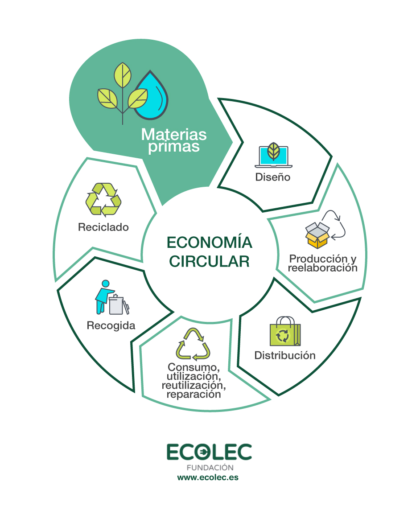
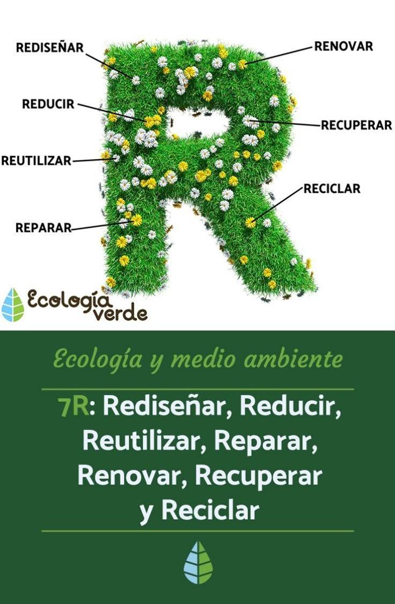
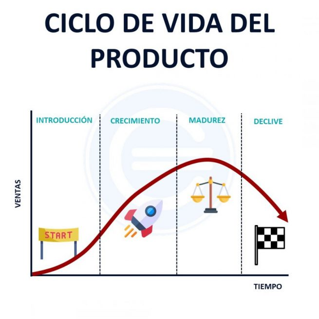

4.1 La economía circular
La economía circular es un modelo económico que busca reducir al mínimo los residuos y aprovechar al máximo los recursos. A diferencia del modelo lineal tradicional (producir, usar, desechar), la economía circular apuesta por reutilizar, reparar, renovar y reciclar materiales y productos existentes el mayor tiempo posible.
4.1.2 Características de las 3R a las 7R
Las R representan acciones clave para una economía más sostenible. Las 3R básicas son: Reducir, Reutilizar y Reciclar. Se han ampliado a 7R: Rediseñar, Reducir, Reutilizar, Reparar, Renovar, Recuperar y Reciclar.
4.2 Modelos de producción y economía lineal
Aquí se comparan los modelos lineal y circular:
| Economía Lineal | Economía Circular |
|---|---|
| Extraer, producir, desechar | Reutilizar, reciclar, rediseñar |
| Genera más residuos | Minimiza residuos |
| Uso de recursos finitos | Uso responsable y eficiente |
4.3 El consumismo
El consumismo es un patrón de comportamiento enfocado en el consumo excesivo. Sus causas incluyen la publicidad y cultura materialista. Beneficios: crecimiento económico; Problemas: impacto ambiental, agotamiento de recursos.
4.3.1 Obsolescencia programada
La obsolescencia programada es la práctica de diseñar productos con una vida útil limitada para fomentar su reemplazo. Esto afecta la sostenibilidad y genera más residuos.
4.4 Economía verde
Es un modelo que prioriza el crecimiento económico sin degradar el medio ambiente. Se basa en tecnologías limpias, eficiencia energética y reducción de la huella ecológica.
4.5 Ciclo de vida de un producto
El ciclo de vida incluye: extracción de materias primas, producción, distribución, uso y disposición. Evaluarlo permite tomar decisiones más sostenibles.
| Fase | Descripción |
|---|---|
| Extracción | Obtención de materias primas |
| Producción | Fabricación del producto |
| Distribución | Transporte hasta el consumidor |
| Uso | Etapa en que el producto es utilizado |
| Fin de vida | Desecho, reciclaje o reutilización |